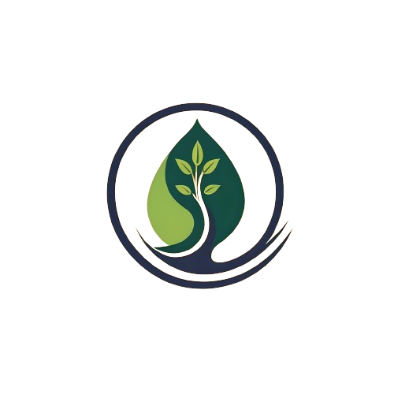
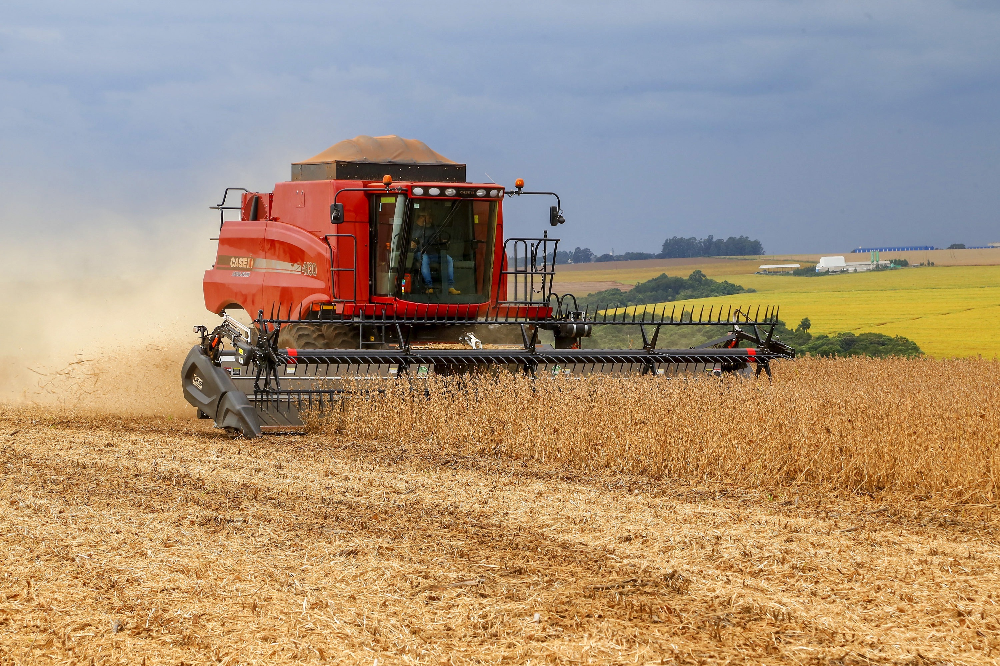

|
 |
Cafeicultura familhar no Paraná |
|---|
|
 |
O paraná se destaca na agricultura nacional, estando no segundo lugar na
lita dos principais Estados produtores do Brasil." maior produtor do agronegócio do Sul do País
tem VBP de R$ 164 bilhões, o que representa quase 50% do resultado da Região. A soja corresponde
a um terço desse volume e também é o carro-chefe da produção paranaense.
Em seguida, os itens que mais contribuem para o faturamento do agro no Paraná são a
criação de frangos e as lavouras de milho.
Tendo um papel tão importante na agriculura nacional óbvio que o paraná importa e exporta muitas coisas,
que somaram US$ 16,7 bilhões por ano.
Mais agora, você já parou para pensar como ese processo de importação e exportação é feito?
E quai impacto eles tem no meio ambiente? Acima de tudo, o que podemos fazer para melhora-lo? |
|---|